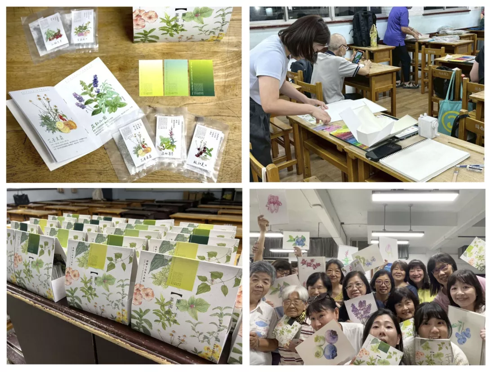
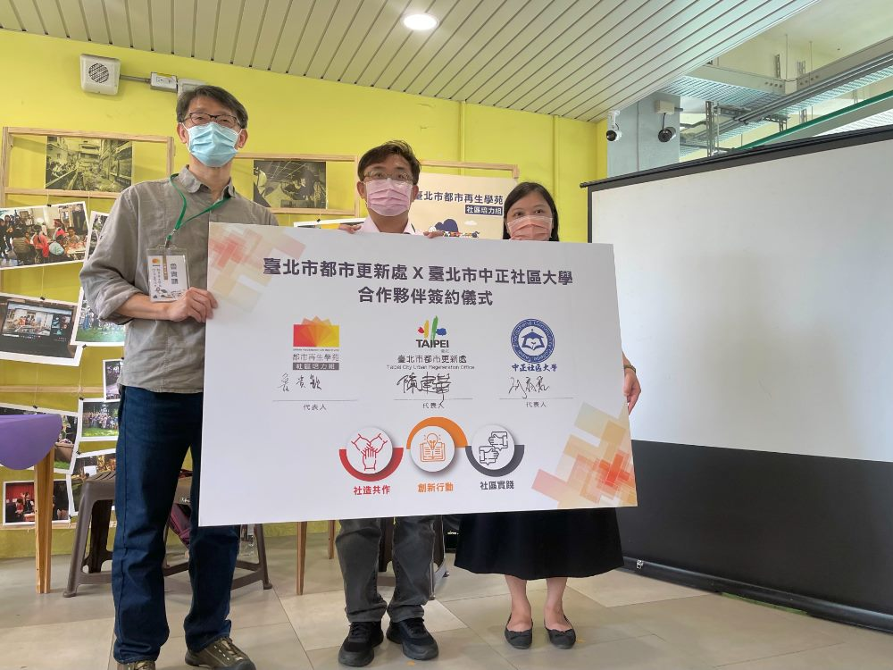
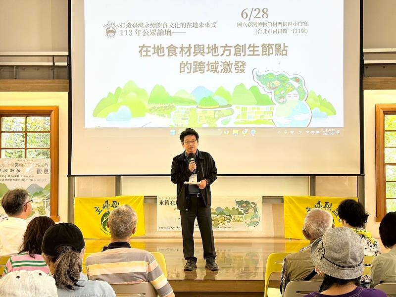

校務公告
| 【教務處】113 學年度第 2 學期選課加退選公告，即日起開放申請。 | 2025-09-05 |
| 【學生事務組】歡迎志工招募活動現正報名中，歡迎踴躍參加。 | 2025-09-05 |
| 【資訊中心】系統維護通知，11 月 10 日（一）22:00 進行停機作業。 | 2025-09-04 |
| 【總務處】校園停電公告，11 月 8 日（六）上午 8 點至 12 點施工。 | 2025-09-04 |
| 【研究發展組】教師研究補助申請，即日起至 12 月 15 日止。 | 2025-09-04 |
| 【圖書館】期末延長開館時段，自 12 月 1 日起實施。 | 2025-09-03 |
活動看板
● ● ● ● ● ● ●
相關新聞


2025-06-28
《筆下生姿・茶湯生香》
中正社區大學《筆下生姿・茶湯生香》聯合創作，邀請您一同開箱一盒來自學習現場的自然禮物。這場創作由「色鉛筆繪植物」四個班級與「療癒養生種香草」
更多內容 ❯

111-06-13
北市都市再生學苑始業式盛大展開！
北市都更處前(23)日於銀髮服務新創活力中心(潭美國小舊址)辦理111年度「臺北市都市再生學苑－社區培力組始業式」，現場都更處陳建華處長加碼宣布，將與臺北市中正社區大學簽署合作意向書，繼去年與「中國文化大學建築與都市設計學系」建立官學合作。
更多內容 ❯
2025-05-15
2025沅陵椿萱節
透一年一度、深受親子家庭喜愛的「2025沅陵椿萱節」，已於5月5日至5月11日熱鬧舉行並圓滿落幕。本活動由臺北市商業處指導，結合沅陵商圈與多個單位攜手辦理，活動內容豐富多元，吸引眾多市民熱情參與，不僅帶動商圈人潮，更展現社區深厚的凝聚力與創意能量。
更多內容 ❯

2024-07-01
竹美館×主婦聯盟地方創生飲食文化公眾論壇 倡議文化永續及文化扎根
國立新竹生活美學館於今年度主辦兩場「飲食文化×地方創生」公眾論壇，以飲食文化回應地方創生與食農教育推動議題，
更多內容 ❯